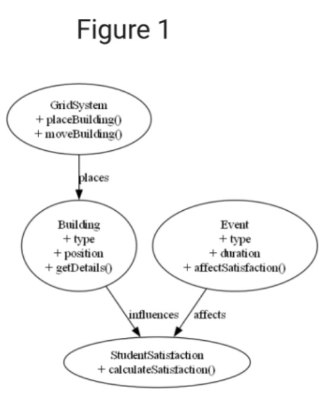

Figure 1, is an initial class diagram created using the Python module Graphviz. It shows the relationship between the GridSystem (which represents the map). This is where we can place and move Buildings (which have a type and a position), Events (which have a type and duration and can affect satisfaction) and finally the StudentSatisfaction (which has one method for calculating satisfaction). Figure 1 was later updated to Figure 3 (a more in depth OOP class diagram) using the Lucidchart UML tool, which can be found in the Architecture pdf.
